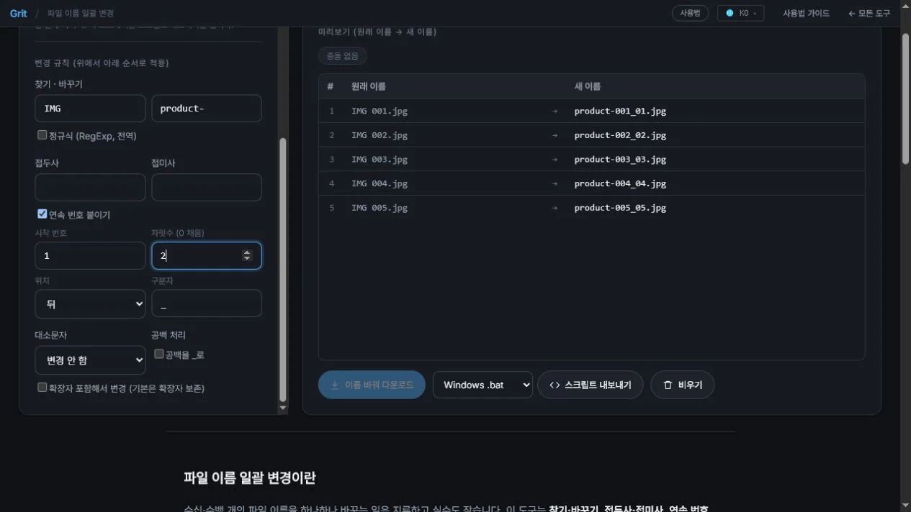

파일 이름 한 번에 바꾸는 방법 (일괄 변경)
사진 파일에 날짜·번호를 붙이거나, 공백을 언더바로 바꾸거나, 파일명에서 특정 단어를 일괄 치환해야 할 때 파일을 하나씩 이름 바꾸기 하면 시간이 오래 걸리고 실수도 납니다. 이 글에서는 설치·로그인 없이 브라우저에서 여러 파일 이름을 규칙으로 한 번에 바꾸는 방법을 단계별로 정리합니다.
이런 분께 필요해요
- 사진·문서에 날짜나 프로젝트명을 접두사로 붙여야 할 때
- 파일명의 공백을 언더바(
_)나 하이픈(-)으로 일괄 바꿔야 할 때 - 파일명에 포함된 특정 단어를 찾아 치환해야 할 때
- 여러 파일에 순서대로 번호(
001,002…)를 붙여야 할 때
파일 이름을 일괄 변경하는 단계
- 파일 불러오기이름을 바꿀 파일들을 화면에 드래그&드롭하거나 선택해 불러옵니다. 파일 내용은 읽지 않고 이름만 가져옵니다.
- 규칙 설정찾기·바꾸기, 접두사·접미사 추가, 연속 번호, 대소문자 변환, 공백 처리 등 원하는 규칙을 설정합니다. 여러 규칙을 조합해 적용할 수 있습니다.
- 미리보기 확인현재 파일명과 변경될 파일명을 나란히 비교해 결과를 미리 확인합니다. 이 단계에서 원본 파일은 전혀 건드리지 않습니다.
- 저장 또는 스크립트 내보내기결과가 맞으면 새 이름으로 저장하거나, Windows(
.bat/.ps1)·Linux/Mac(.sh) 스크립트로 내보내 실행합니다.
사용할 수 있는 변경 규칙
- 찾기·바꾸기 — 파일명에서 특정 텍스트나 정규식 패턴을 찾아 치환합니다.
- 접두사·접미사 — 이름 앞이나 뒤에 고정 텍스트를 추가합니다. 예:
2024-접두사,_final접미사. - 연속 번호 — 파일 목록 순서대로
001,002… 형태의 번호를 붙입니다. 자릿수와 시작 번호를 지정할 수 있습니다. - 대소문자 변환 — 전체 대문자, 전체 소문자, 단어 첫 글자만 대문자(타이틀케이스)로 바꿉니다.
- 공백 처리 — 공백을
_또는-로 바꾸거나 제거합니다.
스크립트 내보내기란
브라우저는 보안 정책상 직접 파일 이름을 바꾸는 기능을 제공하지 않습니다. 대신 스크립트를 내보내 실행하면 같은 결과를 얻을 수 있습니다.
.bat— Windows 명령 프롬프트(cmd)에서 실행합니다..ps1— Windows PowerShell에서 실행합니다..sh— Mac 터미널이나 Linux bash에서 실행합니다.
스크립트를 실행하기 전에 텍스트 편집기로 열어 내용을 확인하는 것을 권장합니다.
원본 파일은 안전한가 — 미리보기와 보안
도구는 파일 내용을 읽지 않고 파일명만 가져와 규칙을 적용합니다. 미리보기 단계에서 실제 파일은 전혀 수정되지 않으며, 저장 또는 스크립트 실행 후에야 이름이 바뀝니다. 모든 처리는 브라우저 안에서만 이루어지며, 파일 정보는 서버로 전송되지 않습니다.
자주 묻는 질문
어떤 변경 규칙을 사용할 수 있나요?
찾기·바꾸기(텍스트 및 정규식), 접두사·접미사 추가, 연속 번호 매기기, 대소문자 변환, 공백을 언더바·하이픈으로 바꾸기 등 다양한 규칙을 사용할 수 있습니다.
연속 번호는 어떻게 매기나요?
규칙에서 번호 매기기를 선택하고 시작 번호와 자릿수(예: 001, 01, 1)를 지정합니다. 파일 목록 순서대로 번호가 붙습니다.
미리보기로 원본이 변경되나요?
아니요. 미리보기는 결과 이름을 화면에 보여줄 뿐, 실제 파일은 전혀 건드리지 않습니다. '저장' 또는 '스크립트 내보내기'를 선택해야 변경이 적용됩니다.
스크립트(bat·ps1·sh)란 무엇인가요?
브라우저는 직접 파일 이름을 바꿀 수 없으므로, 설정한 규칙대로 파일명을 일괄 변경하는 스크립트를 생성합니다. Windows는 bat·ps1, Mac·Linux는 sh 파일을 실행하면 됩니다.
파일이 서버로 전송되나요?
아니요. 파일 이름 목록을 읽고 변환 규칙을 적용하는 처리가 모두 브라우저 안에서만 이루어집니다. 파일 내용은 서버로 전송되지 않습니다.
변경 전후 파일명 검토하기

- 원래 파일명 목록을 추가하고 찾을 문자열과 바꿀 문자열을 지정합니다.
- 연속 번호와 자릿수, 구분자를 설정해 새 이름을 생성합니다.
- 오른쪽 표에서 원래 이름과 새 이름을 비교하고 충돌 없음 상태를 확인합니다.